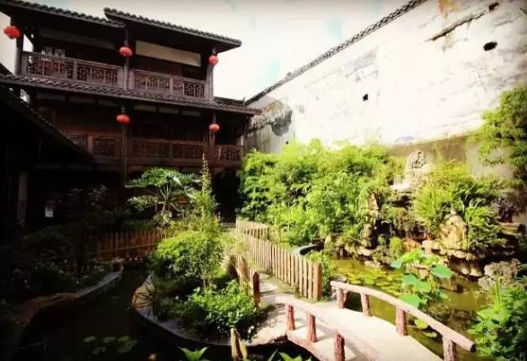
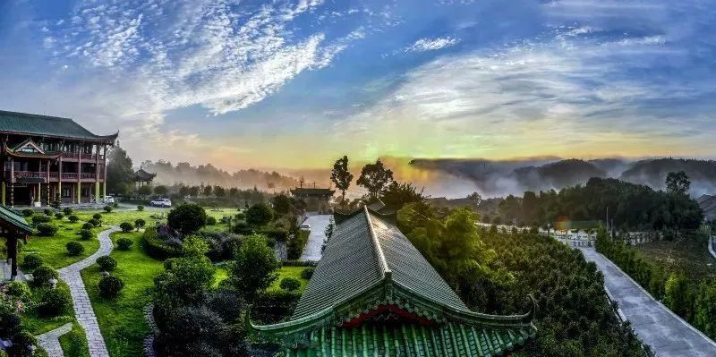
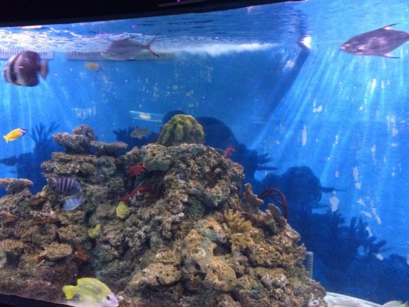

川东小峨嵋
巴南区
前身是历史名邑巴县，商代时巴人就在此
立国建都。1994年12月撤县建区，成立巴南
区。
巴南区位于重庆市主城南部，属主城九
区之一，东与涪陵南川接壤，南与綦江相连，
西与江津、九龙坡、大渡口毗邻，北与南岸
江北、渝北、长寿交界。
截止2013年底，巴南区辖8个街道、14个
镇，面积1825平方公里。2010年，巴南区常住
人口为918692人。
巴南区旅游资源丰富，主要有鱼洞乌皮
樱桃、五布柚等地理标志产品，以及南温泉、
东温泉、圣灯山国家森林等景区景点。
|  | 丰盛古镇位于重庆市的东南边陲，也是就是现在的巴南区，明末清初始建场镇，曾经是重庆府去南川、涪陵的重要驿站。古镇老街两侧均为2～3层全木质穿斗结构的店铺。铺后多为青砖黑瓦四合院，其檐额、堂额、门窗等，多饰以戏文故事、鱼虫鸟兽，具有典型的徽派风格，这一特点在重庆众多古镇中是不多见的。丰盛古镇因其历史悠久，文化底蕴深厚 |
|  | 中泰天心佛文化旅游区位于重庆巴南区天星寺镇。该景区总占地3300余亩，海拔近千米，其中森林植被1800余亩，环境优美、空气清新、植被丰富、负氧离子含量高，是修身养心静心、养老的绝佳胜地。为积极加强中泰文化旅游方面的交流与合作，该景区引入泰国数百家正宗产品，包括泰国文化旅游产品、手工制品等数百种商品 |
|  | 重庆汉海海洋公园由新加坡投资，隶属于汉海海洋世界集团。项目坐落于重庆市巴南区龙洲湾，紧临轨道交通3号线学堂湾站。项目总投资8亿元，占地310亩，划分为海洋公园和鲸豚湾水世界两大主题公园，是集吃、住、行、游、购、娱为一体的高品质大型海洋主题乐园。热带雨林藤萝缠绕、流水淙淙，漫步“热带雨林”，一起穿越亚马逊，探索神秘物种，追寻地球最原始的美好！热带雨林主题展区展示了鳄雀鳝 |